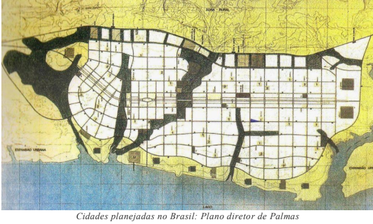
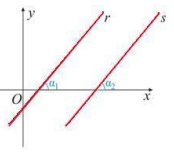
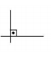
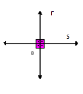
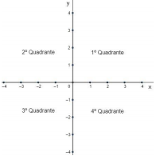
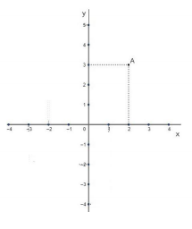
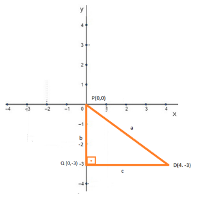
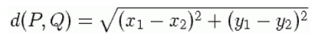
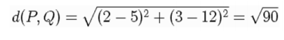
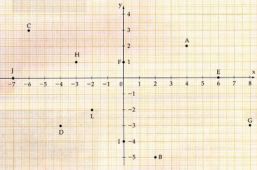

Capítulo 1
A INDÚSTRIA, AS CIDADES PLANEJADAS E A GEOMETRIA ANALÍTICA
Contextualizando
Leia a Manchete de um jornal
Indústria da construção está comprometida com planejamento e desenvolvimento de cidades inteligentes Representantes do governo e líderes comunitários de municípios brasileiros, com o apoio da indústria propõem planejar para o futuro, a criação de cidades inteligentes levando em consideração aspectos de sustentabilidade. As cidades inteligentes poderão trazer estímulo para que a indústria da construção inove e produza de forma mais eficiente, com menor impacto ambiental, e gerando melhoria na saúde e bem-estar da população. No Brasil, já houve um movimento semelhante referente à criação de cidades planejadas, incluindo Teresina, Aracajú, Belo Horizonte, Brasília entre outras. Nos anos 80, a última cidade planejada no Brasil, fazendo parte daquele movimento foi a cidade de Palmas, no Tocantins. Tratava-se, originalmente, de uma cidade de traçado quadricular, com avenidas compridas e bem espaçadas; grandes rotatórias; e muitas áreas verdes. Observando o plano diretor da cidade de Palmas é possível notar que houve uma intensa busca por funcionalidade e o livre desenvolvimento de funções em uma cidade que, em tese, era apenas administrativa.
Embora ambos os movimentos foram criados tendo em vista a melhoria da qualidade de vida dos seus cidadãos, o das cidade planejadas privilegiava as questões de urbanismo, enquanto o das cidades inteligentes privilegia a sustentabilidades, o cuidado com o meio ambiente e a melhoria da qualidade de vida da população. Como uma cidade com um traçado quadrangular pode favorecer a localização e o deslocamento de veículos ou de pessoas?
Caro aluno! Nesse capítulo você vai verificar como uma cidade planejada como Palmas favorece a localização e o deslocamento de veículos. Conhecendo a Geometria Analítica, você poderá calcular distâncias entre dois pontos e a equação de uma reta.
(RE)CONSTRUINDO CONHECIMENTOSA GEOMETRIA ANALÍTICA
A Geometria Analítica, também chamada geometria de coordenadas estuda-se a geometria a partir dos princípios da Álgebra. Na Geometria Analítica, usa-se o Plano Cartesiano para fazer o estudo do ponto, da distância entre dois pontos e da reta, entre outras figuras geométricas
RELEMBRANDO A HISTÓRIARené Descartes (1596-1650), em 1637, publicou o livro Discurso do Método cujo objetivo era expor sua visão racionalista da ciência como estudo da natureza. No capítulo de seu livro intitulado “La Geómetrie”, Descartes apresentou um método racional de unificação da Geometria e da Álgebra que recebeu nome de Geometria Analítica e que traduz pontos, retas e construções geométricas em igualdades algébricas. As figuras geométricas passaram a ser representadas no plano cartesiano, um sistema de eixos ordenados e perpendiculares que possibilita que cada ponto do plano seja identificado por um par ordenado de números reais, o Plano Cartesiano. Embora alguns historiadores afirmem que a Geometria Analítica tenha origem na Antiguidade, para que ela pudesse assumir sua forma atual, era necessário o desenvolvimento do simbolismo algébrico que só aconteceu no século XVII com Descartes e seu contemporâneo Pierre de Fermat (1601-1665).
Vamos iniciar o estudo da Geometria Analítica por uma situação prática.Este é o mapa da parte da cidade de Palmas. Como você pode observar, as suas ruas são paralelas e perpendiculares entre si.
RETAS PARALELAS E PERPENDICULARES:
Duas retas são paralelas quando são equidistantes durante toda sua extensão, não possuindo nenhum ponto em comum. Dessa forma, considere duas retas, r e s, no plano cartesiano.
Duas retas concorrentes são chamadas perpendiculares quando no ponto em que se cruzam (intersecção) formam um ângulo reto (ângulo de 90o ).
O ângulo de 90o é representado por 
No exemplo observe as retas perpendiculares r e s.
RELEMBRANDO PARA PROSSEGUIR
Acesse o vídeo clicando no link a seguir:
PLANO CARTESIANO O QUE SÃO COORDENADAS, ABSCISSA E ORDENADA
Plano cartesiano é um sistema de coordenadas formado por duas retas perpendiculares, chamadas de eixos cartesianos. Esses eixos determinam um único plano, assim, é possível determinar a localização no sistema de coordenadas de todo os pontos e, consequentemente, de qualquer objeto formado por esses pontos que estejam nesse plano. O plano cartesiano é composto por dois eixos, o eixo horizontal chamado de eixo das abscissas (x) e eixo vertical chamado de eixo das ordenadas (y). As retas perpendiculares dividem o plano em quatro regiões que chamamos de quadrantes e que são nomeados no sentido anti-horário.
 Um ponto qualquer do plano cartesiano é indicado a partir de suas coordenadas, que são representadas por um par ordenado, ou seja, um ponto é formado por um conjunto de dois números que possui uma ordem a ser seguida (ordenado). A notação do par ordenado ou ponto P é: P (x, y) x → à Abscissa y → à Ordenada
 Assim, para localizar um ponto, basta marcar o valor no eixo das abscissas e, em seguida, o valor no eixo das ordenadas. Depois trace uma reta perpendicular aos pontos x e y encontrados. O local onde essas retas perpendiculares se encontram é onde ponto P está. Observe a localização do ponto A de coordenada (2,3).
Para a localização dos pontos neste mapa, considere o ponto P em vermelho como o ponto o ponto P(0,0) considerado a origem do sistema, imaginando a rua vertical como o eixo das ordenadas, e a rua horizontal como o eixo das abscissas.
Leia a situação:Um turista localizado no ponto P(0,0) marcado em vermelho, queria encontrar-se com um amigo que está no ponto laranja. Ele desceu três quadras e virou para a sua esquerda, andou quatro quadras a direita no mata e encontrou seu amigo. Marque com um lápis colorido os dois eixos vertical e horizontal e verifique que o mapa da cidade de Palmas é um plano cartesiano. Que P (0, 0) a origem do sistema o ponto vermelho é onde estava o turista e o ponto laranja é o ponto D (4, -3) onde estava o seu amigo. No mapa de cidade de Palmas, está desenhado o triângulo laranja como o que está desenhado a seguir no plano cartesiano. Observe o triângulo laranja e verifique que é um triângulo retângulo em que os lados b e c são catetos e lado a é a hipotenusa.
Pode-se, então, pelo Teorema de Pitágoras calcular o lado a, sabendo que b = 3 unidades e c = 4 unidades Leia o enunciado do Teorema de Pitágoras: Em um triângulo retângulo, o quadrado da medida da hipotenusa a é igual à soma dos quadrados das medidas dos catetos b e c, isto é, a2=b2+c2 . Veja o cálculo: a2=32+42 a 2= 9 + 16 a 2 = 25 a = 5 A distância entre o turista e o seu amigo é de 5 unidades. Considerando as coordenadas dos dois pontos quaisquer no Plano Cartesiano pode-se entender que o segmento que liga os dois pontos é a hipotenusa de um triângulo retângulo e a distância entre eles pode ser calculada pela fórmula a seguir:
Veja o problema a seguir e acompanhe os cálculos realizados: Qual é a distância entre os pontos P=(2,3) e Q=(5,12)? Sabe-se que o ponto 1 é o ponto P (2, 3), cujas coordenadas são x1 = 2 e y1 = 3 e que o ponto 2 é o ponto Q(5,12) cujas coordenadas são x2 = 5 e y2 =12. Substituindo os valores na fórmula, temos:
Resposta: A distância entre P e Q é o número irracional √90 .
1) Observe o plano cartesiano abaixo e dê as coordenadas dos pontos indicados:
2) Calcule a distância entre os pontos: a) A(1, 3) e B(9, 9) b) C(-3, 1) e D(5, -14) 
O QUE APRENDI
Nesse capítulo, compreendi que numa cidade planejada com ruas paralelas e perpendiculares entre si, pode-se localizar facilmente pessoas e locais, e calcular as distâncias entre eles usando fórmulas da Geometria Analítica que se originam do Teorema de Pitágoras. Localizei pontos no Plano Cartesiano.
1) A(4, 2), B(2, -5), C(-6, 3), D(-4, -3), E(6, 0), F(0, 1), G(8, -3), H(-3, 1), I(0, -4), J(-7, 0), L(-2, -2), M(7, 4)
a) d = 10 b) d = 17